runmode
This identifier is the most important one, and determine what the program will do. It works with the following second identifiers.
reference int RA DEC
Set the reference point for the system to study, this parameter is the only mandatory one of the section. This keyword is used to convert the relative coordinates used in [Lenstool] to absolute coordinates used in some input or output files.
If int = 1, RA and DEC are in the sexagesimal format hh:mm:ss and dd:mm:ss.
If int = 3, RA and DEC are in degrees.
inverse int1 float1 [float2]
If int1 = 0, no optimisation is performed.
If int1 = 1, the optimisation method is the parabolic method. float1 is the maximum number of iterations.
If int1 = 2, Lenstool performs a Monte-Carlo sampling of the [potfile] parameters [sigma] and [cut radius]. For each particular value of sigma and cut radius, it performs a parabolic optimisation (see also [potfile] Section). float1 is the maximum number of iterations per Monte-Carlo iteration.
If int1 = 3, the optimisation method is the Bayesian method based on the BayeSys algorithm (see also Jullo et al. 2007). This optimisation method is slower but is less sensible to local  minima than the parabolic method.
minima than the parabolic method. float1 drives the speed of convergence. It controls the rate 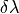 by which is raised the cooling factor  at each step of the Markov Chain. When the burn-in phase starts,
at each step of the Markov Chain. When the burn-in phase starts,  and when it reaches 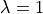, it switches to the sampling phase. The cooling factor balances the relative weight of the likelihood and the prior in the posterior joint probability, as follow
and when it reaches 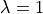, it switches to the sampling phase. The cooling factor balances the relative weight of the likelihood and the prior in the posterior joint probability, as follow
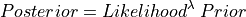
Default value float1 = 0.5.
float2 is the number of iterations. By default, it is equal to the number of iterations needed to complete the burn-in phase. Since we use 10 Markov chains in parallel, 10 samples per iteration are appended to the bayes.dat ASCII file.
If int1 = 4, the optimisation method is a maximum likelihood method alike when int1 = 1 but based on the BayeSys algorithm. The cooling factor do not stop at 1. float1 and float2 have the same meaning as when int1 = 3.
During the optimisation with [BayeSys], a status line is printed. According to the optimisation phase, the status line can take the following forms:
Burn-in: <cooling factor> <Nb it.> <chi2> <evidence> <bad samples/Ntot samples> <samples/s>
Sampling: <cooling factor> <Nb Sampling it./Ntot it.> <chi2> <evidence> [CTRL-C to interrupt]
<bad samples> refer to image plane optimisation, during which bad samples predict less images than observed. In Bayesian mode ( int1 = 3), the cooling factor stops at 1, whereas in Maximum Likelihood mode ( int1 = 4), it continues to increase.
At the end of the optimisation process, Lenstool creates a best.par and a bestopt.par files. They contain the best model and the best model + optimisation limits respectively. Additionally, useful information related to the optimisation are provided in their header. Be aware that in Bayesian mode ( int1 = 3), these too file have no particular meaning since the algorithm samples the posterior Probability Distribution Function, and do not particularly look for the best fit. Prefer other tools like bayesResults.pl script to analyse the bayes.dat file.
image int filename
int 0: if false >0: if true.
filename: refer to an ASCII catalog file (see input images catalog).
If true the program will read a list of arclets in filename, find their sources (and put them in the output file source.dat ) and recompute all their images (and put them in the output file image.all. Moreover the program will create other output files: image.dat where only the computed arclet with deformation 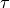 less than grande large dist are indicated (basically, image.dat does not include giant arcs). dist.dat information about the ellipticity of all the arclets, including weakly distorted images and giant arcs. sort.dat same as image.all but sorted from the most elongated (giant arcs) to the less (arclets).
Interest: find counter images.
Note: both image and source identifiers can be used at the same time.
source int filename
int 0: if false >0: if true.
filename: refer to an ASCII catalog file (see Input images catalog file)
If true the program will read a list of sources in filename (and put them in the output file [source.dat]) and compute all their images (and put them in the output file [image.all]). Moreover the program will create the same output files as for the arclet preceding sub-qualifier: [image.dat] where only the computed arclet with deformation τ less than grande large dist are indicated. dist.dat information about the ellipticity of all the arclet sorted from the most elongated to the less. sort.dat same as image.all but sorted from the most elongated to the less.
Interest: usually used to show typical image configurations.
Note: both image and source identifiers can be used at the same time.
time int1 int2 float filename
int1 0: if false 1: if true.
filename: fits file that will contain the results.
float: redshift of the source.
If true will compute for the redshift float a pixel-frame (int2int2) of the (relative) arrival time (in year) of each pixel of the image plane (area defined by champ ). Results are written in the pixel-frame file filename.
EQUATIONS
The (relative) arrival time surface corresponds to the time of arrival at the Image Plane of a flash that left at the same time the Source Plane. It is absolute in the sense we have substracted the mean travel time between the two planes. To find out the time-delay between two images of the same source, one has to know the position of the images and then compute the difference between the two corresponding arrival times.
ampli int1 int2 float filename
int1 0: if false 1: if true.
float: redshift of the source.
filename: fits file that will contain the results.
Same as time but compute the amplification 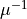 in the image plane.
If int1 = 1, compute . If int1 = 2, compute its absolute value and if int1 = 3, compute its absolute value in magnitude. If int1 = 5, compute the convergence map in the image plane, and take the ratio 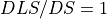. If int1 = 6, compute the shear map in the image plane and take the ratio . If int1 = -1, compute the absolute value of in the source plane considering every images (prototype).
The amplification is defined as 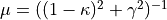.
with 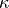 and  the convergence and the shear respectively. They are defined by 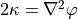 and 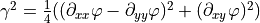
the convergence and the shear respectively. They are defined by 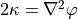 and 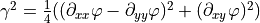
poten int1 int2 float filename
int1 0: if false 1,2: if true. int2 size of the square grid. float redshift of the source plane (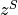 ). filename : fits file that will contain the results.
Same as time but compute the relative (int1 = 1) or absolute (int1 = 2) projected potential.
EQUATIONS
Where the absolute projected potential (int1 = 2) is: 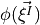. Because it is absolute it does not depend of the redshift (float).
mass int1 int2 float filename
int1 0: if false 1,2: if true. int2 size of the square grid. float redshift of the lens plane (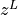 ). filename: fits file that will contain the result.
Same as time but compute the relative (int1 = 1) the absolute (int1 = 2 and 4) projected mass-density, or the integrated (int1 = 3) projected mass-density. Assuming the redshift of the source from the z_source keyword, the relative projected mass-density (int1 = 1) (also called convergence) is determined by
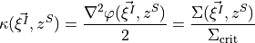
The critical density is defined by:
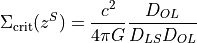
The absolute projected mass-density (int1 = 2 and 4) is determined by:
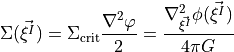
in unit of 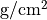 (int =2) or 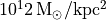 (int = 4).
Because it is absolute, it does not depend of the redshift (float).
The integrated projected mass-density per pixel (int1 = 3) is determined by:
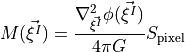
in unit of 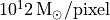
Obviously, it depends on the pixel size. As for the time function, the area covered by the image is defined in the frame section. In Bayesian optimisation mode, you can get the projected error mass-density (int1 = 5) in . The map size in arcsec is defined with the dmax keyword in the champ section. In the rectangular field case, the image size is (X,Y) = (scalingint2, int2).
shear int1 int2 float filename
Shear is just a pixel-frame of the intensity of the shear with no indication of the orientation of the shear.
int1 can take the following values:
0: false
1: shear_map
in the Image Plane for 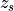: 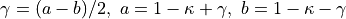2: shear_map
 in the Image Plane for : 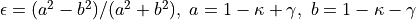
in the Image Plane for : 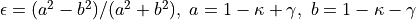3: shear_map 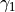 in the Image Plane for : 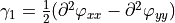
4: shear_map 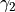 in the Image Plane for : 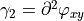
-1: shear_map
in the Source Plane for -2: shear_map
in the Source Plane for
int2 size of the square grid. float redshift of the source. filename fits file that will contain the result.
If int1 <0, the behavior is the same but for pixels are considered in the source plane.
shearfield int float filename int2
int 0: if false 1,2,3,4: if true. If true will compute for the redshift float the shear field at int2int2] points of the Image Plane (area defined by frame ). Results are written in the file filename in the same arclet-type format (see image.dat).
If int = 1, the size of the ticks correspond to the induced ellipticity by the mass distribution. If int = 2, the ticks show only the polarization of the field. If int = 3, the ticks show the deformation 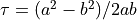. If int = 4, the ticks show the usual ellipticity components 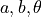. Note: Do not mix the identifiers shear and shearfield. shear is just a pixel-frame of the intensity of the shear with no indication of the orientation of the shear. shearfield on the contrary will give you the orientation of the shear and its intensity but only in a grid of int2int2 points. Default int2 = 25.
imseeing float float
FWHM of the gaussian Imseeing of the arclet assuming that both the profile of the arclet and of the seeing are Gaussian. It’s a very simple and crude correction. Default value is 0 (meaning no seeing correction).
grid int1 int2 float
int1 0: if false 1,2: if true. If true, will create a grid of int2 points. If int1= 1, it considers this grid as the Source Plane at the redshift of float, and compute the corresponding grid in the Image Plane. If int1= 2, it considers this grid as the Image Plane and compute the corresponding grid in the Source Plane at the redshift of float. The grid coordinates either in the source or in the image planes are defined in the frame section by the dmax or by the set of keywords (xmin, xmax, ymin, ymax). Results are in the files: gi1.dat (image vertical grid) gi2.dat (image horizontal grid) and gs1.dat (source vertical grid) gs2.dat (source horizontal grid). All these file have the following format: 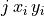 where 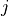 is an index,  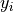 are the pixel coordinates.
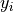 are the pixel coordinates.
minchi0 float float
value of the at which the optimization program will stop in the case of a parabolic optimisation. Default is 0, but this is not dramatic in case of slow convergence or even non-convergence at all. The number of iterations is also controlled from inverse qualifier.
pixel int1 int2 filename
int1 0: if false >0: if true. filename: has to be a fits file. If true, it will create a pixel-frame filename of int2int2 pixels that corresponds of the brightness intensity in the image-plane of all the arc(let)s computed from:
in case of
int1 =1, either the objects defined in theimageand/or thesourceidentifiers and/or the shapemodel/shapelimit sections.in case of
int1 =2, an input image in the source plane defined using thesframeandcleansetparameters of thecleanlenssections. For example this input image can directly be the output of acleanlenssource reconstruction.
If the first identifier [observ] is set, the program will convolve the true image by a seeing and add Poisson Noise. The purpose of pixel is to make realistic images of arc(let)s or pixelised source plane from a given projected potential which can be compared directly with real CCD images of arc(let)s (see for example Kneib et al. 1993, Fig. 1b). It can make images of several arc(let)s coming from various sources on the same frame (Note: this is not the case with the iso identifier).
An image source.fits of the corresponding source is also created. Its size, resolution and location can be altered from the default values with the cleanlens section.
verbose int
If int is 0, minimal log information is printed to the screen. If int is 1, then some debugging information is printed to the screen.
marker int float filename
int 0: if false 1: if true. filename input points filename must be a 3 columns ASCII file:
|  | | |.
| | |.
If true, will read the points markers in the file filename and compute the corresponding points in the Source Plane at redshift float. Results are put in the file [:MarkersDat:marker_s.dat].
radialprop int float1 float2
int 0: if false 1,2,3: if true. If true, will compute for the current potential some properties of images for a Source Plane at redshift float1. These properties differs according to the value of int. They are computed along a radial line starting at the center of the first clump and with the position angle float2 expressed in degree. Results are put in the files: radial.dat and radial2.dat. These are huge datafile, hence be careful! If int= 1 only radial.dat will be created with the following format:
|  | 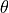 |
| 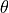 |  | 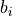 |
| 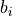 |  | 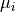 |
| 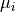 |
where is the radial distance, θ is the direction of the radial axis (90deg relative to PA), is the radial eigenvalue of the magnification matrix, is the orthoradial eigenvalue of the magnification matrix,  is the direction of the shear (90edeg relative to PA), {\mu_i} is the amplification.
is the direction of the shear (90edeg relative to PA), {\mu_i} is the amplification.
If int= 2 radial.dat and radial2.dat will be created, radial.dat will have the following format:
| | 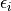 | 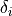 | 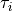 | 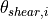 | |
where is the radial distance, is the induced ellipticity, is the induced distortion, is the induced deformation, is the direction of the shear (90deg relative to PA), is the amplification. The file radial2.dat will have the following format:
| | 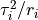 | 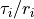 |
If int= 3 only radial.dat will be created with the following format:
| | 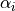 | 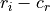 | 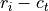 |
where is the radial distance, is the deflection angle, 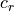 is the radial critical radius, 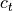 the tangential critical radius.
dpl int1 int2 float filename1 filename2
int1 0: if false, 1: if true. If true, compute the displacement map of size int2int2 for a source plane at redshift float, and for a spatial coverage specified in the section champ.
The displacement maps along the X and Y axes are written in the FITS files filename1 and filename2 respectively.
restart int1 int2
int1 0: if, false (default), 1: if true. If true, store a file restart.dat in the local working directory (name can be changed in dimension.h), and use it for restarting lenstool where it stopped in a previous run. At restart, bayes.dat and burning.dat files are overwritten at the identical.
int2 The random seed value used in the BayeSys algorithm to sample the parameter space. int2 must be positive. Negative int2 (default) makes BayeSys use a seed value computed for the computer clock, and no restart is possible.
The restart feature only works with the inverse 3 optimisation mode.
Note that 2 identical models running on different machines can produce slightly different restart.dat files due to numerical precision limits. Nonetheless the behaviour should be overall similar.
To convert the restart.dat file to ASCII, you can compile the code restart2ascii.c located in the ./perl directory using
gcc -o restart2ascii restart2ascii.c